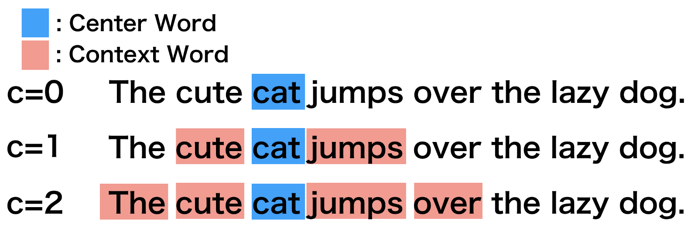

library(tidyverse) # loads dplyr, ggplot2, and others
library(stringr) # to handle text elements
library(tidytext) # includes set of functions useful for manipulating text
library(ggthemes) # to make your plots look nice
library(text2vec) # for word embedding implementation
library(widyr) # for reshaping the text data
library(irlba) # for svd
library(umap) # for dimensionality reductionWord embedding
SICSS, 2022
Word embedding notebook
This hands-on exercise focuses on word embedding and provides an overview of the data structures, and functions relevant for, estimating word vectors for word-embedding analyses.
In this tutorial, you will learn how to:
- Generate word vectors (embeddings) via SVD
- Train a local word embedding model in GloVe
- Visualize and inspect results
- Load and examine pre-trained embeddings
Note: Adapts from tutorials by Chris Bail here and Julia Silge here and Emil Hvitfeldt and Julia Silge here.
Setup
We begin by reading in the data. These data come from a sample of 1m tweets by elected UK MPs over the period 2017-2019. The data contain just the name of the MP-user, the text of the tweet, and the MP’s party. We then just add an ID variable called “postID.”
twts_sample <- readRDS("data/twts_corpus_sample.rds")
#create tweet id
twts_sample$postID <- row.names(twts_sample)If you’re working on this document from your own computer (“locally”) you can download the tweets sample data in the following way:
twts_sample <- readRDS(gzcon(url("https://github.com/cjbarrie/CTA-ED/blob/main/data/wordembed/twts_corpus_sample.rds?raw=true")))Word vectors via SVD
We’re going to set about generating a set of word vectors with from our text data. Note that many word embedding applications will use pre-trained embeddings from a much larger corpus, or will generate local embeddings using neural net-based approaches.
Here, we’re instead going to generate a set of embeddings or word vectors by making a series of calculations based on the frequencies with which words appear in different contexts. We will then use a technique called the “Singular Value Decomposition” (SVD). This is a dimensionality reduction technique where the first axis of the resulting composition is designed to capture the most variance, the second the second-most etc…
How do we achieve this?
Implementation
The first thing we need to do is to get our data in the right format to calculate so-called “skip-gram probabilties.” If you go through the code line by the line in the below you will begin to understand what these are.
What’s going on?
Well, we’re first unnesting our tweet data as in previous exercises. But importantly, here, we’re not unnesting to individual tokens but to ngrams of length 6 or, in other words, for postID n with words k indexed by i, we take words i1 …i6, then we take words i2 …i7. Try just running the first two lines of the code below to see what this means in practice.
After this, we make a unique ID for the particular ngram we create for each postID, and then we make a unique skipgramID for each postID and ngram. And then we unnest the words of each ngram associated with each skipgramID.
You can see the resulting output below.
#create context window with length 6
tidy_skipgrams <- twts_sample %>%
unnest_tokens(ngram, tweet, token = "ngrams", n = 6) %>%
mutate(ngramID = row_number()) %>%
tidyr::unite(skipgramID, postID, ngramID) %>%
unnest_tokens(word, ngram)
head(tidy_skipgrams, n=20)# A tibble: 20 × 4
username party_value skipgramID word
<chr> <chr> <chr> <chr>
1 kirstysnp Scottish National Party 1_1 in
2 kirstysnp Scottish National Party 1_1 amongst
3 kirstysnp Scottish National Party 1_1 all
4 kirstysnp Scottish National Party 1_1 the
5 kirstysnp Scottish National Party 1_1 horror
6 kirstysnp Scottish National Party 1_1 at
7 kirstysnp Scottish National Party 1_2 amongst
8 kirstysnp Scottish National Party 1_2 all
9 kirstysnp Scottish National Party 1_2 the
10 kirstysnp Scottish National Party 1_2 horror
11 kirstysnp Scottish National Party 1_2 at
12 kirstysnp Scottish National Party 1_2 the
13 kirstysnp Scottish National Party 1_3 all
14 kirstysnp Scottish National Party 1_3 the
15 kirstysnp Scottish National Party 1_3 horror
16 kirstysnp Scottish National Party 1_3 at
17 kirstysnp Scottish National Party 1_3 the
18 kirstysnp Scottish National Party 1_3 notion
19 kirstysnp Scottish National Party 1_4 the
20 kirstysnp Scottish National Party 1_4 horror What next?
Well we can now calculate a set of probabilities from our skipgrams. We do so with the pairwise_count() function from the widyr package. Essentially, this function is saying: for each skipgramID count the number of times a word appears with another word for that feature (where the feature is the skipgramID). We set diag to TRUE when we also want to count the number of times a word appears near itself.
The probability we are then calculating is the number of times a word appears with another word denominated by the total number of word pairings across the whole corpus.
#calculate probabilities
skipgram_probs <- tidy_skipgrams %>%
pairwise_count(word, skipgramID, diag = TRUE, sort = TRUE) %>% # diag = T means that we also count when the word appears twice within the window
mutate(p = n / sum(n))
head(skipgram_probs[1000:1020,], n=20)Warning: `distinct_()` was deprecated in dplyr 0.7.0.
Please use `distinct()` instead.
See vignette('programming') for more help
This warning is displayed once every 8 hours.
Call `lifecycle::last_lifecycle_warnings()` to see where this warning was generated.# A tibble: 20 × 4
item1 item2 n p
<chr> <chr> <dbl> <dbl>
1 no to 4100 0.0000531
2 vote for 4099 0.0000531
3 for vote 4099 0.0000531
4 see the 4078 0.0000528
5 the see 4078 0.0000528
6 having having 4076 0.0000528
7 by of 4065 0.0000527
8 of by 4065 0.0000527
9 this with 4051 0.0000525
10 with this 4051 0.0000525
11 set set 4050 0.0000525
12 right the 4045 0.0000524
13 the right 4045 0.0000524
14 what the 4044 0.0000524
15 going to 4044 0.0000524
16 the what 4044 0.0000524
17 to going 4044 0.0000524
18 evening evening 4035 0.0000523
19 get the 4032 0.0000522
20 the get 4032 0.0000522So we see, for example, the words vote and for appear 4099 times together. Denominating that by the total n of word pairings (or sum(skipgram_probs$n)), gives us our probability p.
Okay, now we have our skipgram probabilities we need to get our “unigram probabilities” in order to normalize the skipgram probabilities before applying the singular value decomposition.
What is a “unigram probability”? Well, this is just a technical way of saying: count up all the appearances of a given word in our corpus then divide that by the total number of words in our corpus. And we can do this as such:
#calculate unigram probabilities (used to normalize skipgram probabilities later)
unigram_probs <- twts_sample %>%
unnest_tokens(word, tweet) %>%
count(word, sort = TRUE) %>%
mutate(p = n / sum(n))Finally, it’s time to normalize our skipgram probabilities.
We take our skipgram probabilities, we filter out word pairings that appear twenty times or less. We rename our words “item1” and “item2,” we merge in the unigram probabilities for both words.
And then we calculate the joint probability as the skipgram probability divided by the unigram probability for the first word in the pairing divided by the unigram probability for the second word in the pairing. This is equivalent to: P(x,y)/P(x)P(y).
In essence, the interpretation of this value is: “do events (words) x and y occur together more often than we would expect if they were independent”?
Once we’ve recovered these normalized probabilities, we can have a look at the joint probabilities for a given item, i.e., word. Here, we look at the word “brexit” and look at those words with the highest value for “p_together.”
Higher values greater than 1 indicate that the words are more likely to appear close to each other; low values less than 1 indicate that they are unlikely to appear close to each other. This, in other words, gives an indication of the association of two words.
#normalize skipgram probabilities
normalized_prob <- skipgram_probs %>%
filter(n > 20) %>% #filter out skipgrams with n <=20
rename(word1 = item1, word2 = item2) %>%
left_join(unigram_probs %>%
select(word1 = word, p1 = p),
by = "word1") %>%
left_join(unigram_probs %>%
select(word2 = word, p2 = p),
by = "word2") %>%
mutate(p_together = p / p1 / p2)
normalized_prob %>%
filter(word1 == "brexit") %>%
arrange(-p_together)# A tibble: 1,016 × 7
word1 word2 n p p1 p2 p_together
<chr> <chr> <dbl> <dbl> <dbl> <dbl> <dbl>
1 brexit brexit 38517 0.000499 0.00279 0.00279 64.0
2 brexit softer 50 0.000000648 0.00279 0.00000484 48.0
3 brexit dividend 176 0.00000228 0.00279 0.0000201 40.7
4 brexit scotlandsplaceineurope 37 0.000000479 0.00279 0.00000446 38.5
5 brexit botched 129 0.00000167 0.00279 0.0000208 28.7
6 brexit gridlock 30 0.000000389 0.00279 0.00000521 26.7
7 brexit deadlock 120 0.00000155 0.00279 0.0000242 23.0
8 brexit preparedness 22 0.000000285 0.00279 0.00000446 22.9
9 brexit soft 89 0.00000115 0.00279 0.0000190 21.8
10 brexit weaken 24 0.000000311 0.00279 0.00000521 21.4
# … with 1,006 more rowsUsing this normalized probabilities, we then calculate the PMI or “Pointwise Mutual Information” value, which is simply the log of the joint probability we calculated above.
Definition time: “PMI is logarithm of the probability of finding two words together, normalized for the probability of finding each of the words alone.”
We then cast our word pairs into a sparse matrix where values correspond to the PMI between two corresponding words.
pmi_matrix <- normalized_prob %>%
mutate(pmi = log10(p_together)) %>%
cast_sparse(word1, word2, pmi)
#remove missing data
pmi_matrix@x[is.na(pmi_matrix@x)] <- 0
#run SVD
pmi_svd <- irlba(pmi_matrix, 256, maxit = 500)
glimpse(pmi_matrix)Formal class 'dgCMatrix' [package "Matrix"] with 6 slots
..@ i : int [1:350700] 0 1 2 3 4 5 6 7 8 9 ...
..@ p : int [1:21173] 0 7819 14360 20175 25467 29910 34368 39207 43376 46401 ...
..@ Dim : int [1:2] 21172 21172
..@ Dimnames:List of 2
.. ..$ : chr [1:21172] "the" "to" "and" "of" ...
.. ..$ : chr [1:21172] "the" "to" "and" "of" ...
..@ x : num [1:350700] 0.65326 -0.01948 -0.00645 0.27136 -0.52462 ...
..@ factors : list()Notice here that we are setting the vector size to equal 256. This just means that we have a vector length of 256 for any given word.
That is, the set of numbers used to represent a word has length limited to 256. This is arbitrary and can be changed. Typically, a size in the low hundreds is chosen when representing a word as a vector.
The word vectors are then taken as the “u” column, or the left-singular vectors, of the SVD.
#next we output the word vectors:
word_vectors <- pmi_svd$u
rownames(word_vectors) <- rownames(pmi_matrix)
dim(word_vectors)[1] 21172 256Exploration
We can define a simple function below to then take our word vector, and find the most similar words, or nearest neighbours, for a given word:
nearest_words <- function(word_vectors, word){
selected_vector = word_vectors[word,]
mult = as.data.frame(word_vectors %*% selected_vector) #dot product of selected word vector and all word vectors
mult %>%
rownames_to_column() %>%
rename(word = rowname,
similarity = V1) %>%
anti_join(get_stopwords(language = "en")) %>%
arrange(-similarity)
}
boris_synonyms <- nearest_words(word_vectors, "boris")Joining, by = "word"brexit_synonyms <- nearest_words(word_vectors, "brexit")Joining, by = "word"head(boris_synonyms, n=10) word similarity
1 johnson 0.10309556
2 boris 0.09940448
3 jeremy 0.04823204
4 trust 0.04800155
5 corbyn 0.04102031
6 farage 0.03973588
7 trump 0.03938184
8 can.t 0.03533624
9 says 0.03324624
10 word 0.03267437head(brexit_synonyms, n=10) word similarity
1 brexit 0.38737979
2 deal 0.15083433
3 botched 0.05003683
4 tory 0.04377030
5 unleash 0.04233445
6 impact 0.04139872
7 theresa 0.04017608
8 approach 0.03970233
9 handling 0.03901461
10 orderly 0.03897535#then we can visualize
brexit_synonyms %>%
mutate(selected = "brexit") %>%
bind_rows(boris_synonyms %>%
mutate(selected = "boris")) %>%
group_by(selected) %>%
top_n(15, similarity) %>%
mutate(token = reorder(word, similarity)) %>%
filter(token!=selected) %>%
ggplot(aes(token, similarity, fill = selected)) +
geom_col(show.legend = FALSE) +
facet_wrap(~selected, scales = "free") +
scale_fill_manual(values = c("#336B87", "#2A3132")) +
coord_flip() +
theme_tufte(base_family = "Helvetica")GloVe Embeddings
This section adapts from tutorials by Pedro Rodriguez here and Dmitriy Selivanov here and Wouter van Gils here.
GloVe algorithm
This section is taken from text2vec package page here.
The GloVe algorithm by pennington_glove_2014 consists of the following steps:
Collect word co-occurence statistics in a form of word co-ocurrence matrix \(X\). Each element \(X_{ij}\) of such matrix represents how often word i appears in context of word j. Usually we scan our corpus in the following manner: for each term we look for context terms within some area defined by a window_size before the term and a window_size after the term. Also we give less weight for more distant words, usually using this formula: \[decay = 1/offset\]
Define soft constraints for each word pair: \[w_i^Tw_j + b_i + b_j = log(X_{ij})\] Here \(w_i\) - vector for the main word, \(w_j\) - vector for the context word, \(b_i\), \(b_j\) are scalar biases for the main and context words.
Define a cost function \[J = \sum_{i=1}^V \sum_{j=1}^V \; f(X_{ij}) ( w_i^T w_j + b_i + b_j - \log X_{ij})^2\] Here \(f\) is a weighting function which help us to prevent learning only from extremely common word pairs. The GloVe authors choose the following function:
\[ f(X_{ij}) = \begin{cases} (\frac{X_{ij}}{x_{max}})^\alpha & \text{if } X_{ij} < XMAX \\ 1 & \text{otherwise} \end{cases} \]
How do we go about implementing this algorithm in R?
Let’s first make sure we have loaded the packages we need:
library(text2vec) # for implementation of GloVe algorithm
library(stringr) # to handle text strings
library(umap) # for dimensionality reduction later onImplementation
We then need to set some of the choice parameters of the GloVe model. The first is the window size WINDOW_SIZE, which, as above, is arbitrary but normally set around 6-8. This means we are looking for word context of words up to 6 words around the target word. The image below illustrates this choice parameter for the word “cat” in a given sentence, with increase context window size:
